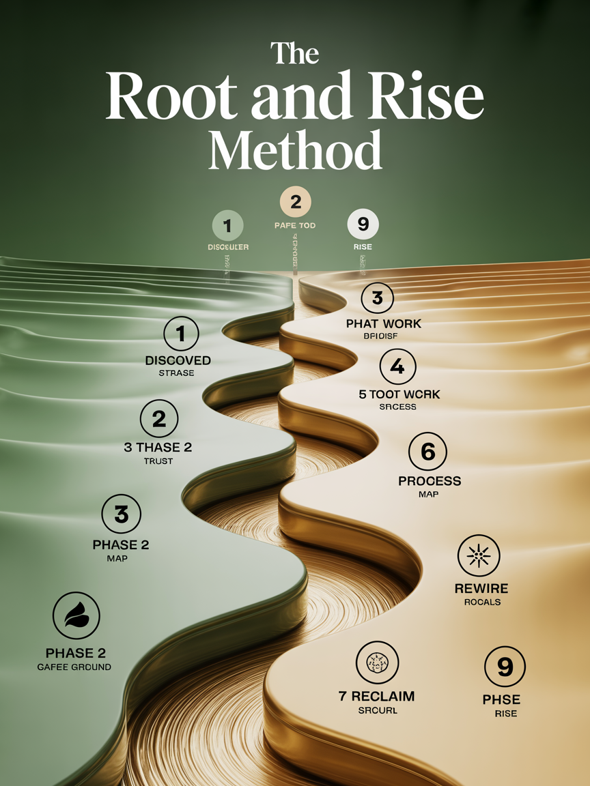
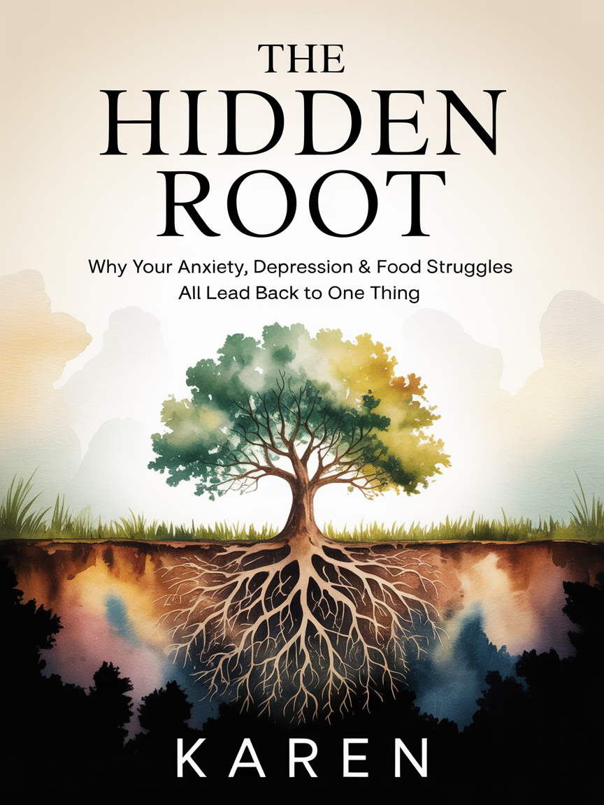

Trauma Therapist & Coach for Women
Anxiety. Depression. Food struggles. Relationship patterns. They're all branches of the same tree. I help women heal the root — so everything else can finally change.
Does This Sound Like You?
These aren't character flaws. They're symptoms — and they all share the same root.
The Root & Rise Method™
A clinically-backed, 4-pillar framework that goes beneath the symptoms to the one thing driving all of them.
Creating radical safety for your nervous system. Before we go deep, you learn to feel safe — in your body, in the room, and with me.
Going beneath the surface to the original trauma using EMDR, Accelerated Resolution Therapy, and Internal Family Systems.
Processing and releasing trauma at the neurological level using EFT, somatic work, and inner child healing. Your body lets go.
Integration, identity reclamation, and stepping into the woman you were always meant to be. Not managing — truly living.
Your Transformation Roadmap
Every client follows this proven path — from first discovery through full reclamation of who they really are.

Work With Karen
Discover why your anxiety, depression & food struggles share a single root — and what to do about it.
A guided group experience through all 4 pillars with weekly coaching, community, and breakthroughs.
12 weeks of deep, personalized therapy & coaching with full access to all 7 clinical modalities.
Meet Karen
For years, I dealt with my own anxiety, my own depression, my own complicated relationship with food — and I thought they were separate problems. It wasn't until I discovered that every single one was rooted in unresolved trauma that everything changed.
Now I help women do the same thing — using 7 evidence-based modalities inside a container that is deeply, radically safe. My clients tell me that other therapists understand them intellectually. But with me, they feel held.

The Book
Why Your Anxiety, Depression & Food Struggles All Lead Back to One Thing
Part memoir, part clinical guide, part permission slip — this book takes women on a journey from symptom management to root-cause healing. Written in the warm, direct voice Karen's clients know and trust.
Get Notified When It LaunchesDiscover why everything you've tried hasn't worked — and the one shift that changes everything. Free PDF guide.